14 Ch 14 - Advuntetures in Coviaraince
Important note Jesper and Richard use brackets for vectors and paranthesis for matrices.
in the previous chapter we saw how varying intercepts can help the model distinguish between different groups in the data. Now we are going to explore how varying slopes also can come in hand.
Thus with varying intercepts we are basically able to have a model with different means for the given groups. And with the slopes we are able to build ‘massive interaction machines.’
Up until now we have only worked with unordered categorical variables, although in this chapter we will also take on variables of continous categories, that will be done with gaussian processes (whatever that is).
We are also going to do inference on instrumental variables, that is inferring cause without closing the backdoor paths.
Why multilevel models with varying slopes? We see that only focusing on averages and even varying intercepts we see that we are generalizing and hence loosing information. Thus including varying intercepts we may end up with a conclusion where we can conclude one thing for a part of the data and another for another part of the data.
14.1 Varying slopes by construction
We need a 2-dimensional Gaussian distribution to represent the slope and the intercept.
Then we also need a correlation matrix, as we need sigmas for each parameter, as they can practically have their own spread.
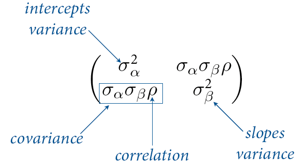
The varying slopes model, we see the following model:
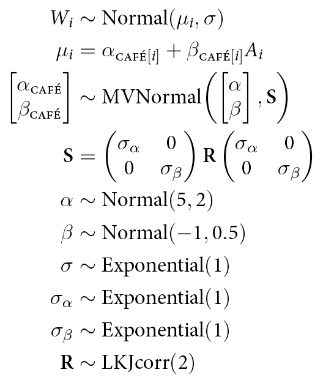
We see that:
mu = is the linear model with the varying intercepts and the varying slopes
The matrix = the mutlivariate prior. one for each cafe and one for if it is in the afternoon.
S = the covariance matrix, see the slides for an example of how that is found. The pc should find the result of this itself.
The rest (alpha to sigma beta) = is just fixed (non-adaptive) priors.
Alpha mean = 5, hence we expect to wait five minutes on average with an sd of 2.
Beta (coefficient for afternoon) = -1 hence we expect to wait less than average in the afternoon. that is with an sd of 0.5.
R = correlation matrix prior. We use LKJ prior. That is a nice family of priors. It is simply a distirbution and named after researcher names. This is the correlation between intecepts and slopes, hence we specify the relationship between slopes and intercepts.
More on the LKJ prior (the onion prior). It looks the following:
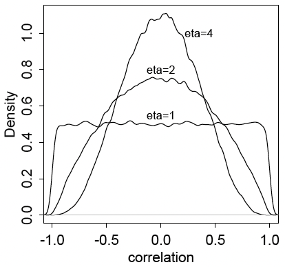
We can adjust eta. When:
Eta = 1 : we have a uniform correlation matrix.
Eta < 1 : then it is sceptical according to correlation between slopes and intercepts.
Eta > 1 : it elevates extreme correlations.
14.1.1 Simulate the population
We start with m14.1, where we have random intercepts and slopes.
We start by simulating the cafés that the robot is going to visit in the next subsection.
a <- 3.5 # average morning wait time
b <- (-1) # average difference afternoon wait time
sigma_a <- 1 # std dev in intercepts
sigma_b <- 0.5 # std dev in slopes
rho <- (-0.7) # correlation between intercepts and slopesNow we create a vector of means for alpha and beta. Mean for alpha = general wait time in the morning and beta = wait time in the afternoon.
Mu <- c( a , b )
Mu## [1] 3.5 -1.0We see that in the afternoon the waits tend to be less.
Now we can build the covariance matrix.
We can build matrices in two ways:
- By using matrix:
cov_ab <- sigma_a*sigma_b*rho
Sigma <- matrix( c(sigma_a^2,cov_ab,cov_ab,sigma_b^2) , ncol=2 )
Sigma## [,1] [,2]
## [1,] 1.00 -0.35
## [2,] -0.35 0.25- By do it more manually
sigmas <- c(sigma_a,sigma_b) # standard deviations
Rho <- matrix( c(1,rho,rho,1) , nrow=2 ) # correlation matrix
# now matrix multiply to get covariance matrix
Sigma <- diag(sigmas) %*% Rho %*% diag(sigmas)We see that the result is the same.
Now we can simulate this is just done by randomly sampling from the multivariate Gaussian distribution as we already have Mu and Sigma.
Notice that we will get two vectors, the intecept and the slopes and the matrix we end up having represent the cafés, one for each café.
library(MASS)
N_cafes <- 20
set.seed(5) # used to replicate example
vary_effects <- mvrnorm(n = N_cafes , Mu , Sigma )
message("Each row is a cafe, V1 = intercept, V2 = slope, it is plotted in a following chunk")## Each row is a cafe, V1 = intercept, V2 = slope, it is plotted in a following chunkhead(vary_effects)## [,1] [,2]
## [1,] 4.223962 -1.6093565
## [2,] 2.010498 -0.7517704
## [3,] 4.565811 -1.9482646
## [4,] 3.343635 -1.1926539
## [5,] 1.700971 -0.5855618
## [6,] 4.134373 -1.1444539Now we can take the vectors and store them in a more meaningful object.
a_cafe <- vary_effects[,1]
b_cafe <- vary_effects[,2]Now we can plot the intercepts and slopes, we see that the simulated data has a negative correlation. We see that x = intercepts and y = the slopes.
Notice that we use ellipses in the plot, these show the quantiles of the data, in a later plot the actual values are presented. But in general the closer you are to the centrum the more observations we are expected to see. Thus in general the intercepts tends towards 3 - 4 and a slope around -1. Recall that we we:
- set the mean of alpha = 3.5 and slope to -1 with,
- with standard deviations of respectively 1 and 0.5, hence the result is very much expected.
- We also explicitly set rho (correlation between slope and intercept) to be -0.7, hence the result is again very much as expected.
- If you count the points, you will see that there are 20, one for each café.
plot( a_cafe , b_cafe , col=rangi2 ,
xlab="intercepts (a_cafe)" , ylab="slopes (b_cafe)" )
# overlay population distribution
library(ellipse)
for ( l in c(0.1,0.3,0.5,0.8,0.99) )
lines(ellipse(Sigma,centre=Mu,level=l),col=col.alpha("black",0.2))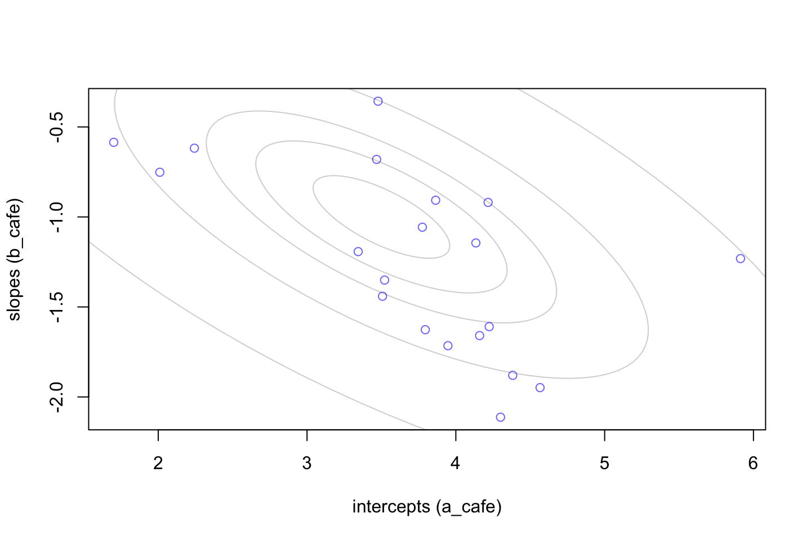
Now we have simulated the data. It is now left for the robot to visit the cafés. That is done in the following subsection.
14.1.2 Simulate observations
Here we will generate the observations that the robot will be making.
library(MASS)
set.seed(5) # used to replicate example
N_cafes <- 20
vary_effects <- mvrnorm( N_cafes , Mu , Sigma )
set.seed(22)
N_visits <- 10
a_cafe <- vary_effects[,1]
b_cafe <- vary_effects[,2]
afternoon <- rep(0:1,N_visits*N_cafes/2) #Every second is afternoon
cafe_id <- rep( 1:N_cafes , each=N_visits ) #Each café is visited 10 times
mu <- a_cafe[cafe_id] + b_cafe[cafe_id]*afternoon #Mean waiting times, every second is lower as it is afternoon.
sigma <- 0.5 # std dev within cafes
wait <- rnorm( N_visits*N_cafes , mu , sigma ) #The wait is defined by normal distribution based on mu and sigma
#Collect information in a data frame
d <- data.frame( cafe=cafe_id , afternoon=afternoon , wait=wait )
head(d,15)| cafe | afternoon | wait |
|---|---|---|
| 1 | 0 | 3.967893 |
| 1 | 1 | 3.857198 |
| 1 | 0 | 4.727875 |
| 1 | 1 | 2.761013 |
| 1 | 0 | 4.119483 |
| 1 | 1 | 3.543652 |
| 1 | 0 | 4.190949 |
| 1 | 1 | 2.533224 |
| 1 | 0 | 4.124032 |
| 1 | 1 | 2.764887 |
| 2 | 0 | 1.628544 |
| 2 | 1 | 1.299709 |
| 2 | 0 | 2.382012 |
| 2 | 1 | 1.216717 |
| 2 | 0 | 1.614051 |
We can also plot them agains each other, here it is clear that each café is having very different mean waiting times
# library(dplyr)
# library(magrittr)
# d1 <- d %>%
# group_by(cafe,afternoon) %>%
# mutate(mu_group = mean(wait)) %>%
# select(-wait) %>%
# distinct()
#
# plot(d1,col = alpha(d1$afternoon + 1, 0.5), pch=16,main = "Black = morning, red = afternoon")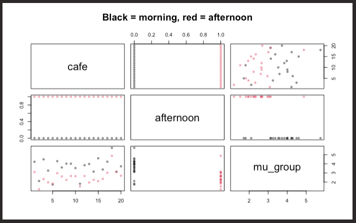
Notice that in the windoes with café each horizontal line is a cafe and wee see the different expected waiting times based on the time of the day. We see that overall the waiting time is the largest in the afternoon and also the cafés are differnt, some have a longer waiting time than the other.
Thus it is interesting to have multiple levels on the slopes as well.
14.1.3 The varying slopes model
This section elaborates on how we need to add the varying effects (the varying slopes). To do this, one must construct a matrix with the parameters for each group. We see in the following chunk that we have a matrix given \(\alpha_{cafe}\) and \(\beta_{cafe}\). Whenever you see the square brackets it basically means that it is a matrix. Notice that the varying effects is explained by a multivariate normal distribution, basically a distribution based on more than one distribution, try to google it for visualization.
Then we have S here the standard deviations is multiplied by R times the stadnard deviations. R is typically given by LKJcorr distribution.
LKJcorr is a distribution that is explained by eta. It takes the following shapes:
- eta = 1, then uniform correlation matrices
- eta > 1, then correlation between intersect and slopes, but not extreme
- eta < 1, elevates extreme correlations
An example:
In the following an example is also plotted.
R <- rlkjcorr( 1e4 , K=2 , eta=2 )
dens( R[,1,2] , xlab="correlation" )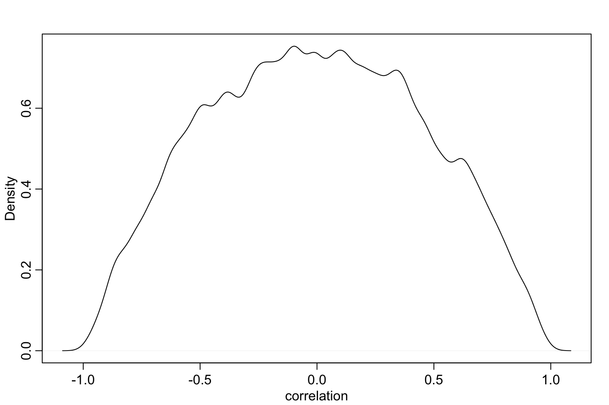
set.seed(867530)
m14.1 <- ulam(
alist(
wait ~ normal( mu , sigma ),
mu <- a_cafe[cafe] + b_cafe[cafe]*afternoon,
c(a_cafe,b_cafe)[cafe] ~ multi_normal( c(a,b) , Rho , sigma_cafe ),
#' a = alpha, b = beta, this create a matrix, hence each
#' row in the matrix = a cafe, that has a pair of params, a and b
#' We then write multi_normal, where provide the a and be params
#' Ulam knows how Rho matrix needs to be set up.
a ~ normal(5,2),
b ~ normal(-1,0.5),
sigma_cafe ~ exponential(1),
sigma ~ exponential(1),
Rho ~ lkj_corr(2) #i.e., the onion prior. Eta = 2
) , data=d , chains=4 , cores=4 )## Running /Library/Frameworks/R.framework/Resources/bin/R CMD SHLIB foo.c
## clang -I"/Library/Frameworks/R.framework/Resources/include" -DNDEBUG -I"/Library/Frameworks/R.framework/Versions/4.0/Resources/library/Rcpp/include/" -I"/Library/Frameworks/R.framework/Versions/4.0/Resources/library/RcppEigen/include/" -I"/Library/Frameworks/R.framework/Versions/4.0/Resources/library/RcppEigen/include/unsupported" -I"/Library/Frameworks/R.framework/Versions/4.0/Resources/library/BH/include" -I"/Library/Frameworks/R.framework/Versions/4.0/Resources/library/StanHeaders/include/src/" -I"/Library/Frameworks/R.framework/Versions/4.0/Resources/library/StanHeaders/include/" -I"/Library/Frameworks/R.framework/Versions/4.0/Resources/library/RcppParallel/include/" -I"/Library/Frameworks/R.framework/Versions/4.0/Resources/library/rstan/include" -DEIGEN_NO_DEBUG -DBOOST_DISABLE_ASSERTS -DBOOST_PENDING_INTEGER_LOG2_HPP -DSTAN_THREADS -DBOOST_NO_AUTO_PTR -include '/Library/Frameworks/R.framework/Versions/4.0/Resources/library/StanHeaders/include/stan/math/prim/mat/fun/Eigen.hpp' -D_REENTRANT -DRCPP_PARALLEL_USE_TBB=1 -I/usr/local/include -fPIC -Wall -g -O2 -c foo.c -o foo.o
## In file included from <built-in>:1:
## In file included from /Library/Frameworks/R.framework/Versions/4.0/Resources/library/StanHeaders/include/stan/math/prim/mat/fun/Eigen.hpp:13:
## In file included from /Library/Frameworks/R.framework/Versions/4.0/Resources/library/RcppEigen/include/Eigen/Dense:1:
## In file included from /Library/Frameworks/R.framework/Versions/4.0/Resources/library/RcppEigen/include/Eigen/Core:88:
## /Library/Frameworks/R.framework/Versions/4.0/Resources/library/RcppEigen/include/Eigen/src/Core/util/Macros.h:628:1: error: unknown type name 'namespace'
## namespace Eigen {
## ^
## /Library/Frameworks/R.framework/Versions/4.0/Resources/library/RcppEigen/include/Eigen/src/Core/util/Macros.h:628:16: error: expected ';' after top level declarator
## namespace Eigen {
## ^
## ;
## In file included from <built-in>:1:
## In file included from /Library/Frameworks/R.framework/Versions/4.0/Resources/library/StanHeaders/include/stan/math/prim/mat/fun/Eigen.hpp:13:
## In file included from /Library/Frameworks/R.framework/Versions/4.0/Resources/library/RcppEigen/include/Eigen/Dense:1:
## /Library/Frameworks/R.framework/Versions/4.0/Resources/library/RcppEigen/include/Eigen/Core:96:10: fatal error: 'complex' file not found
## #include <complex>
## ^~~~~~~~~
## 3 errors generated.
## make: *** [foo.o] Error 1post <- extract.samples(m14.1)
dens( post$Rho[,1,2] , xlim=c(-1,1) ) # posterior
R <- rlkjcorr( 1e4 , K=2 , eta=2 ) # prior
dens( R[,1,2] , add=TRUE , lty=2 )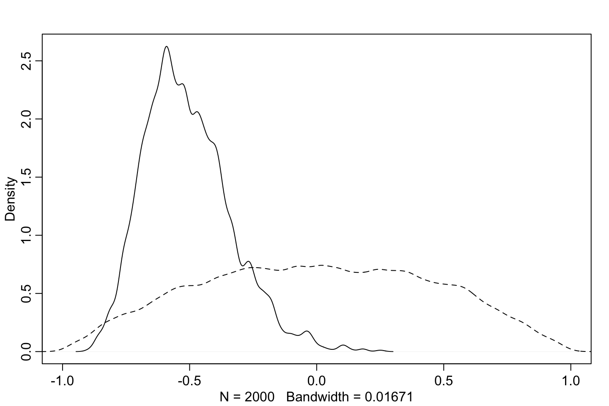
Notice that the dotted line is the prior and the solid line is the posterior.
We see that almost all of the mass is between zero, hence a negative relationship. That is as expected as that is what we modeled it for.
Now we can plot the differences between the raw data values (blue points) hence fixed effects estimates. The open circles are the varying effects estimates. Hence we see that the varying effects model is producing a bit different results. That is the product of being able to differentiate the model between different categories (cafés and waiting time) in the data.
# compute unpooled estimates directly from data
a1 <- sapply( 1:N_cafes ,
function(i) mean(wait[cafe_id==i & afternoon==0]) )
b1 <- sapply( 1:N_cafes ,
function(i) mean(wait[cafe_id==i & afternoon==1]) ) - a1
# extract posterior means of partially pooled estimates
post <- extract.samples(m14.1)
a2 <- apply( post$a_cafe , 2 , mean )
b2 <- apply( post$b_cafe , 2 , mean )
# plot both and connect with lines
plot( a1 , b1 , xlab="intercept" , ylab="slope" ,
pch=16 , col=rangi2 , ylim=c( min(b1)-0.1 , max(b1)+0.1 ) ,
xlim=c( min(a1)-0.1 , max(a1)+0.1 ) )
points( a2 , b2 , pch=1 )
for ( i in 1:N_cafes ) lines( c(a1[i],a2[i]) , c(b1[i],b2[i]) )
# compute posterior mean bivariate Gaussian 14.15
Mu_est <- c( mean(post$a) , mean(post$b) )
rho_est <- mean( post$Rho[,1,2] )
sa_est <- mean( post$sigma_cafe[,1] )
sb_est <- mean( post$sigma_cafe[,2] )
cov_ab <- sa_est*sb_est*rho_est
Sigma_est <- matrix( c(sa_est^2,cov_ab,cov_ab,sb_est^2) , ncol=2 )
# draw contours
library(ellipse)
for ( l in c(0.1,0.3,0.5,0.8,0.99) )
lines(ellipse(Sigma_est,centre=Mu_est,level=l),
col=col.alpha("black",0.2))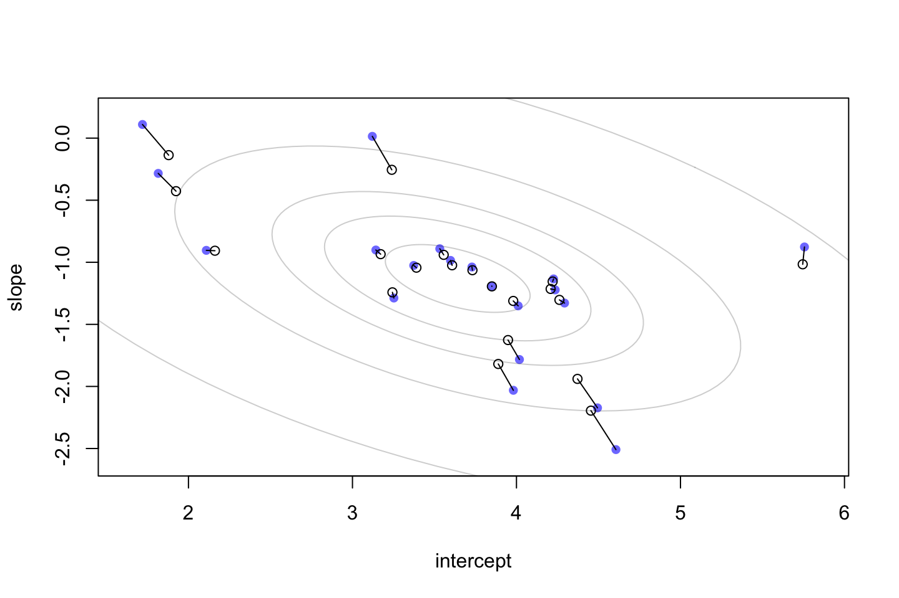
Plot interpretation:
The contours of the inferred population, thus the multivariate distribution that is learned from the data. We see that each ellipse is the quantiles of the data. hence 50 = 50% of the data.
We see that we have a couple of observations with a high slope (top of the graph). We see that the model is skeptical of that. Although when it regularize that, it also alters the intercept, that is because the model knows that slope and intercept is correlated.
14.2 Advanced varying slopes
library(rethinking)
data(chimpanzees)
d <- chimpanzees
d$block_id <- d$block
d$treatment <- 1L + d$prosoc_left + 2L*d$condition
dat <- list(
L = d$pulled_left,
tid = d$treatment,
actor = d$actor,
block_id = as.integer(d$block_id) )
set.seed(4387510)
m14.2 <- ulam(
alist(
L ~ dbinom(1,p),
logit(p) <- g[tid] + alpha[actor,tid] + beta[block_id,tid],
#' After alpha we have a matrix consisting of actor and treatment
#' alpha = an actor and tid = treatment, hence for each actor there
#' is information about the given actor and its treatment.
#' It goes the same for the blocks, where the matrix consists of:
#' row values = block id and each column = treamtnent id
# adaptive priors
vector[4]:alpha[actor] ~ multi_normal(0,Rho_actor,sigma_actor),
#' We jave a matrix consisting of 4 treatments and the actors
#' vector[4] = we have four different treatments
#' It is distributed as a multivariate normal distribution
#' Rho actor = a matrix, the model already knows that
#' sigma_actor = a vector of length 4
vector[4]:beta[block_id] ~ multi_normal(0,Rho_block,sigma_block),
# fixed priors
g[tid] ~ dnorm(0,1),
sigma_actor ~ dexp(1),
Rho_actor ~ dlkjcorr(4), #The onion prior, eta = 4 to regulaize
sigma_block ~ dexp(1),
Rho_block ~ dlkjcorr(4) #the onion prior, just for the blovks
) , data=dat , chains=4 , cores=4 )## Running /Library/Frameworks/R.framework/Resources/bin/R CMD SHLIB foo.c
## clang -I"/Library/Frameworks/R.framework/Resources/include" -DNDEBUG -I"/Library/Frameworks/R.framework/Versions/4.0/Resources/library/Rcpp/include/" -I"/Library/Frameworks/R.framework/Versions/4.0/Resources/library/RcppEigen/include/" -I"/Library/Frameworks/R.framework/Versions/4.0/Resources/library/RcppEigen/include/unsupported" -I"/Library/Frameworks/R.framework/Versions/4.0/Resources/library/BH/include" -I"/Library/Frameworks/R.framework/Versions/4.0/Resources/library/StanHeaders/include/src/" -I"/Library/Frameworks/R.framework/Versions/4.0/Resources/library/StanHeaders/include/" -I"/Library/Frameworks/R.framework/Versions/4.0/Resources/library/RcppParallel/include/" -I"/Library/Frameworks/R.framework/Versions/4.0/Resources/library/rstan/include" -DEIGEN_NO_DEBUG -DBOOST_DISABLE_ASSERTS -DBOOST_PENDING_INTEGER_LOG2_HPP -DSTAN_THREADS -DBOOST_NO_AUTO_PTR -include '/Library/Frameworks/R.framework/Versions/4.0/Resources/library/StanHeaders/include/stan/math/prim/mat/fun/Eigen.hpp' -D_REENTRANT -DRCPP_PARALLEL_USE_TBB=1 -I/usr/local/include -fPIC -Wall -g -O2 -c foo.c -o foo.o
## In file included from <built-in>:1:
## In file included from /Library/Frameworks/R.framework/Versions/4.0/Resources/library/StanHeaders/include/stan/math/prim/mat/fun/Eigen.hpp:13:
## In file included from /Library/Frameworks/R.framework/Versions/4.0/Resources/library/RcppEigen/include/Eigen/Dense:1:
## In file included from /Library/Frameworks/R.framework/Versions/4.0/Resources/library/RcppEigen/include/Eigen/Core:88:
## /Library/Frameworks/R.framework/Versions/4.0/Resources/library/RcppEigen/include/Eigen/src/Core/util/Macros.h:628:1: error: unknown type name 'namespace'
## namespace Eigen {
## ^
## /Library/Frameworks/R.framework/Versions/4.0/Resources/library/RcppEigen/include/Eigen/src/Core/util/Macros.h:628:16: error: expected ';' after top level declarator
## namespace Eigen {
## ^
## ;
## In file included from <built-in>:1:
## In file included from /Library/Frameworks/R.framework/Versions/4.0/Resources/library/StanHeaders/include/stan/math/prim/mat/fun/Eigen.hpp:13:
## In file included from /Library/Frameworks/R.framework/Versions/4.0/Resources/library/RcppEigen/include/Eigen/Dense:1:
## /Library/Frameworks/R.framework/Versions/4.0/Resources/library/RcppEigen/include/Eigen/Core:96:10: fatal error: 'complex' file not found
## #include <complex>
## ^~~~~~~~~
## 3 errors generated.
## make: *** [foo.o] Error 1We see that we are getting a lot of divergent transitions, that is what we have seen before, thus we should do the non centered model.
This is similar varying intercepts, although it is a bit more complex when having varying slopes.
To do this we are going to apply a Cholesky method (Cholesky Magic) this is done internally. There is an example of this in the slides, although it appears to be outside of the course scope.
Now we are going to do the uncentered model (respecify the model)
the non-centered model is simply just a standardized model, where all data is standardized (z-normal)
set.seed(4387510)
m14.3 <- ulam(
alist(
L ~ binomial(1,p),
logit(p) <- g[tid] + alpha[actor,tid] + beta[block_id,tid],
#' We have matrices for alpha and beta, rows = actor / block and columns = treatment id
# adaptive priors - non-centered
transpars> matrix[actor,4]:alpha <- #rows = actors, columns = treatments
compose_noncentered( sigma_actor , L_Rho_actor , z_actor ),
#' Transparse is just fitting the code into a stan framework
#' L_Rho_actor is some cholesky scores and z_actor is some z-scores for each actor
transpars> matrix[block_id,4]:beta <-
compose_noncentered( sigma_block , L_Rho_block , z_block ),
matrix[4,actor]:z_actor ~ normal( 0 , 1 ),
matrix[4,block_id]:z_block ~ normal( 0 , 1 ),
# fixed priors
g[tid] ~ normal(0,1),
vector[4]:sigma_actor ~ dexp(1),
cholesky_factor_corr[4]:L_Rho_actor ~ lkj_corr_cholesky( 2 ), #The correlation between actor and treatment
#' cholesky version of LKJ
#' LKJ distribution is still used
vector[4]:sigma_block ~ dexp(1),
cholesky_factor_corr[4]:L_Rho_block ~ lkj_corr_cholesky( 2 ), #The correlation between block and treatment
# compute ordinary correlation matrixes from Cholesky factors
gq> matrix[4,4]:Rho_actor <<- Chol_to_Corr(L_Rho_actor),
gq> matrix[4,4]:Rho_block <<- Chol_to_Corr(L_Rho_block)
)
,data=dat
,chains=4
,cores=4
,log_lik=TRUE
)## Running /Library/Frameworks/R.framework/Resources/bin/R CMD SHLIB foo.c
## clang -I"/Library/Frameworks/R.framework/Resources/include" -DNDEBUG -I"/Library/Frameworks/R.framework/Versions/4.0/Resources/library/Rcpp/include/" -I"/Library/Frameworks/R.framework/Versions/4.0/Resources/library/RcppEigen/include/" -I"/Library/Frameworks/R.framework/Versions/4.0/Resources/library/RcppEigen/include/unsupported" -I"/Library/Frameworks/R.framework/Versions/4.0/Resources/library/BH/include" -I"/Library/Frameworks/R.framework/Versions/4.0/Resources/library/StanHeaders/include/src/" -I"/Library/Frameworks/R.framework/Versions/4.0/Resources/library/StanHeaders/include/" -I"/Library/Frameworks/R.framework/Versions/4.0/Resources/library/RcppParallel/include/" -I"/Library/Frameworks/R.framework/Versions/4.0/Resources/library/rstan/include" -DEIGEN_NO_DEBUG -DBOOST_DISABLE_ASSERTS -DBOOST_PENDING_INTEGER_LOG2_HPP -DSTAN_THREADS -DBOOST_NO_AUTO_PTR -include '/Library/Frameworks/R.framework/Versions/4.0/Resources/library/StanHeaders/include/stan/math/prim/mat/fun/Eigen.hpp' -D_REENTRANT -DRCPP_PARALLEL_USE_TBB=1 -I/usr/local/include -fPIC -Wall -g -O2 -c foo.c -o foo.o
## In file included from <built-in>:1:
## In file included from /Library/Frameworks/R.framework/Versions/4.0/Resources/library/StanHeaders/include/stan/math/prim/mat/fun/Eigen.hpp:13:
## In file included from /Library/Frameworks/R.framework/Versions/4.0/Resources/library/RcppEigen/include/Eigen/Dense:1:
## In file included from /Library/Frameworks/R.framework/Versions/4.0/Resources/library/RcppEigen/include/Eigen/Core:88:
## /Library/Frameworks/R.framework/Versions/4.0/Resources/library/RcppEigen/include/Eigen/src/Core/util/Macros.h:628:1: error: unknown type name 'namespace'
## namespace Eigen {
## ^
## /Library/Frameworks/R.framework/Versions/4.0/Resources/library/RcppEigen/include/Eigen/src/Core/util/Macros.h:628:16: error: expected ';' after top level declarator
## namespace Eigen {
## ^
## ;
## In file included from <built-in>:1:
## In file included from /Library/Frameworks/R.framework/Versions/4.0/Resources/library/StanHeaders/include/stan/math/prim/mat/fun/Eigen.hpp:13:
## In file included from /Library/Frameworks/R.framework/Versions/4.0/Resources/library/RcppEigen/include/Eigen/Dense:1:
## /Library/Frameworks/R.framework/Versions/4.0/Resources/library/RcppEigen/include/Eigen/Core:96:10: fatal error: 'complex' file not found
## #include <complex>
## ^~~~~~~~~
## 3 errors generated.
## make: *** [foo.o] Error 1Now we will see that the model produce much more efficient results, although the result is the exact same, the model is simply just able to explore the probability regions more effectively.
We see from the following plot that the effective samples fro the non-centered model is far better.
# extract n_eff values for each model
neff_nc <- precis(m14.3,3,pars=c("alpha","beta"))$n_eff
neff_c <- precis(m14.2,3,pars=c("alpha","beta"))$n_eff
plot( neff_c , neff_nc , xlab="centered (default)" ,
ylab="non-centered (cholesky)" , lwd=1.5 )
abline(a=0,b=1,lty=2)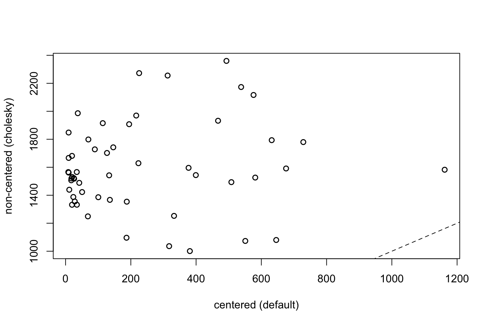
14.2.0.1 Inference!
Here we will see the effects, the first 4 being the actor effects (one for each treatment) and the same principle with the blocks, one for each treamt
precis( m14.3 , depth=2 , pars=c("sigma_actor","sigma_block") )
|
|
|
|
|
|
One entry for each treatment.
We see that the mean of the blocks is more or less the same, that is because the model has learned that the blocks are basically the same.
Although we see that the mean for sigma actor (variance for each chimp) is the lowest overall. Thus we see for the leftie chimp, the second treatment is also where there is the greatest probability of not pulling the left lever (i.e., lowest probability of pulling the left lever)
Now we can intepret how the estimated data compared to the raw data.
# compute mean for each actor in each treatment
pl <- by( d$pulled_left , list( d$actor , d$treatment ) , mean )
# generate posterior predictions using link
datp <- list(
actor=rep(1:7,each=4) ,
tid=rep(1:4,times=7) ,
block_id=rep(5,times=4*7) )
p_post <- link( m14.3 , data=datp )
p_mu <- apply( p_post , 2 , mean )
p_ci <- apply( p_post , 2 , PI )
# set up plot
plot( NULL , xlim=c(1,28) , ylim=c(0,1) , xlab="" ,
ylab="proportion left lever" , xaxt="n" , yaxt="n" )
axis( 2 , at=c(0,0.5,1) , labels=c(0,0.5,1) )
abline( h=0.5 , lty=2 )
for ( j in 1:7 ) abline( v=(j-1)*4+4.5 , lwd=0.5 )
for ( j in 1:7 ) text( (j-1)*4+2.5 , 1.1 , concat("actor ",j) , xpd=TRUE )
xo <- 0.1 # offset distance to stagger raw data and predictions
# raw data
for ( j in (1:7)[-2] ) {
lines( (j-1)*4+c(1,3)-xo , pl[j,c(1,3)] , lwd=2 , col=rangi2 )
lines( (j-1)*4+c(2,4)-xo , pl[j,c(2,4)] , lwd=2 , col=rangi2 )
}
points( 1:28-xo , t(pl) , pch=16 , col="white" , cex=1.7 )
points( 1:28-xo , t(pl) , pch=c(1,1,16,16) , col=rangi2 , lwd=2 )
yoff <- 0.175
text( 1-xo , pl[1,1]-yoff , "R/N" , pos=1 , cex=0.8 )
text( 2-xo , pl[1,2]+yoff , "L/N" , pos=3 , cex=0.8 )
text( 3-xo , pl[1,3]-yoff , "R/P" , pos=1 , cex=0.8 )
text( 4-xo , pl[1,4]+yoff , "L/P" , pos=3 , cex=0.8 )
# posterior predictions
for ( j in (1:7)[-2] ) {
lines( (j-1)*4+c(1,3)+xo , p_mu[(j-1)*4+c(1,3)] , lwd=2 )
lines( (j-1)*4+c(2,4)+xo , p_mu[(j-1)*4+c(2,4)] , lwd=2 )
}
for ( i in 1:28 ) lines( c(i,i)+xo , p_ci[,i] , lwd=1 )
points( 1:28+xo , p_mu , pch=16 , col="white" , cex=1.3 )
points( 1:28+xo , p_mu , pch=c(1,1,16,16) )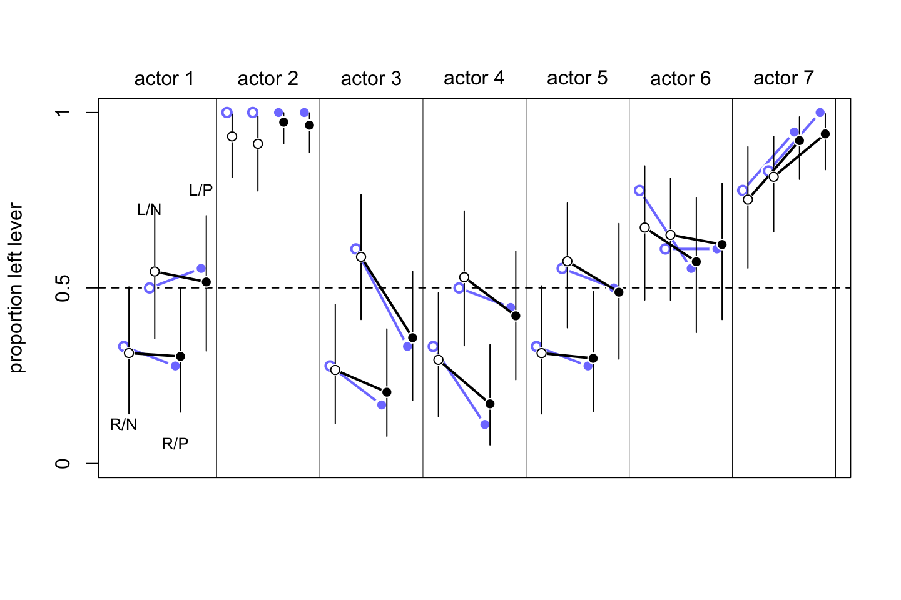
Interpretation:
- blue points is the raw data and the black poinst are the posterior predictions
- We see the actor is simply just very left handed. If we then look at the meean for actor 2, we see that it is the lowest, that is because this is shrunk the most.
14.2.0.2 Conclusions - multilevel horoscopes
Basically people tend to want defaults model given the data although there is no such thing. you should follow this flow:
Think about the causal model first
Begin with ‘empty’ model with varying intercept on relevant clusters
Standardize predictors
Use regularizing priors (simulate)
Add in predictors and vary their slopes
Can drop varying effects with tiny sigmas
Consider two sorts of posterior prediction
- Same units: What happened in these data?
- New units: What might we expect for new units?
Your knowledge of domain trumps all
14.3 Exercises
14.3.1 E1
Add to the following model varying slopes on the predictor x.
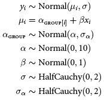
notice that in the new edition we just use exponential instead of halfcauchy.
\[ \begin{align*} \text{First the probability of the data and the linear model} \\ \\ y_i \sim Normial(\mu_i,\sigma) && \text{Likelihood} \\ \mu_i = \alpha_{GROUP[i]} + \beta_{GROUP[i]} x_i && \text{Linear model} \\ \\ \text{Then matrix of varying intercepts and slopes, with its covariance matrix} \\ \\ \begin{bmatrix} \alpha_{GROUP[i]} \\ \beta_{GROUP[i]} \\ \end{bmatrix} \sim MVNormal( \begin{bmatrix} \alpha \\ \beta \\ \end{bmatrix} ,S) && \text{Population of varying effects} \\ S = \begin{pmatrix} \sigma_\alpha & 0 \\ 0 & \sigma_\beta \end{pmatrix} R \begin{pmatrix} \sigma_\alpha & 0 \\ 0 & \sigma_\beta \\ \end{pmatrix} && \text{construct covariance matrix} \\ \\ \text{Then the hyper priors} \\ \\ \alpha \sim Normal(0,10) \\ \beta \sim Normal(0,1) \\ \sigma \sim Exponential(1) \\ \sigma\_\alpha \sim Exponential(1) \\ R \sim LKJcorr(2) && \text{We assume intecept / slope correlations but not too strong} \end{align*} \]
Notice that the MVNormal([]) means a matrix, that being the [] inside a matrix, that being the ().
Notes on LKJCorr, notice that this distribution is the assumed relationship between slopes and intercepts, the LKJCorr is good distriubtion to make these assimptions, examples:
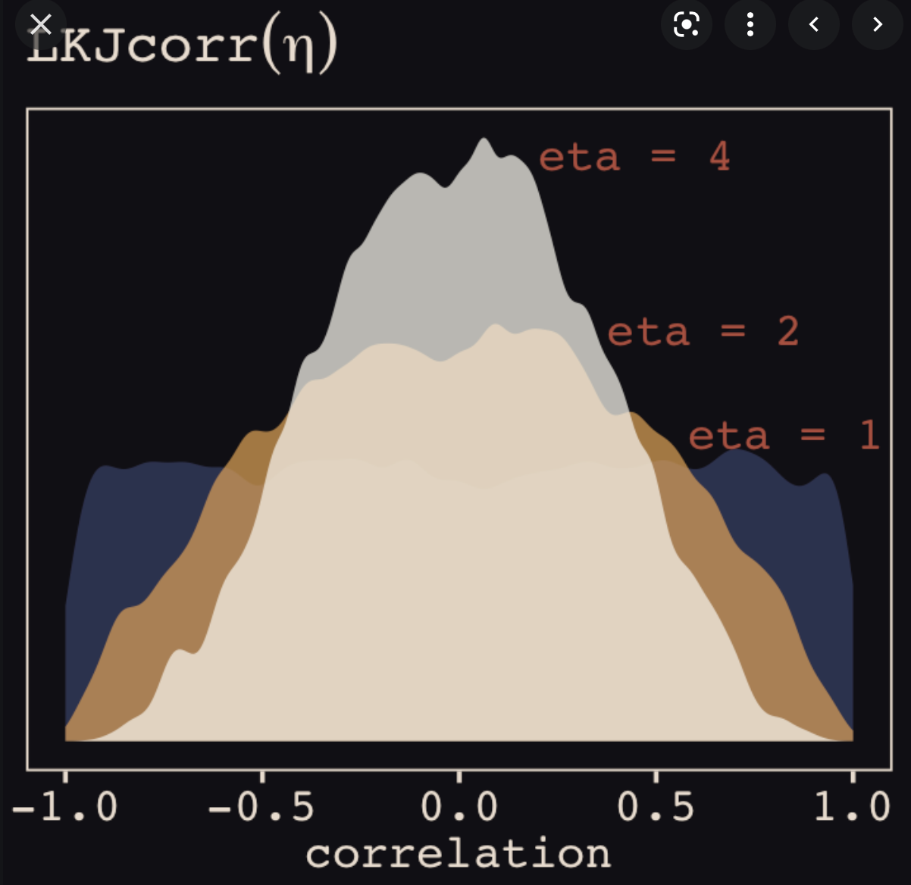
We see that it goes from -1 to 1, thus we are able to use other distributions although this just suits very well. The higher the LKJCorr the closer to 0 are we certain that the correlation is.
14.3.2 E3
When is it possible for a varying slopes model to have fewer effective parameters (as estimated by WAIC or DIC) than the corresponding model with fixed (unpooled) slopes? Explain
We saw in the exercise and in the chapter, that the multilevel model is having an adaptive regularization, so if we see that there is little variance in the data we will observe that the multilevel model is able to regularize the model and thus recognize that it needs less ‘wiggle’ to fit the model.
14.3.3 H1
Let’s revisit the Bangladesh fertility data, data(bangladesh), from the practice problems for Chapter 13. Fit a model with both varying intercepts by district_id and varying slopes of urban by district_id. You are still predicting use contraception. Inspect the correlation between the intercepts and slopes.
Can you interpret this correlation, in terms of what it tells you about the pattern of contraceptive use in the sample?
It might help to plot the mean (or median) varying effect estimates for both the intercepts and slopes, by district.
Then you can visualize the correlation and maybe more easily think through what it means to have a particular correlation. Plotting predicted proportion of women using contraception, with urban women on one axis and rural on the other, might also help.
library(rethinking)
data(bangladesh)
d <- bangladesh
d$district_id <- as.integer(as.factor(d$district))
dat_list <- list(
C = d$use.contraception,
did = d$district_id )